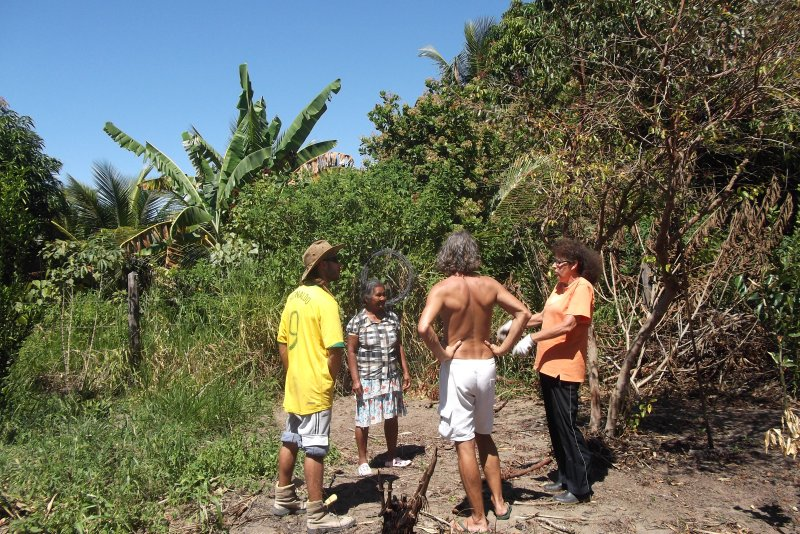
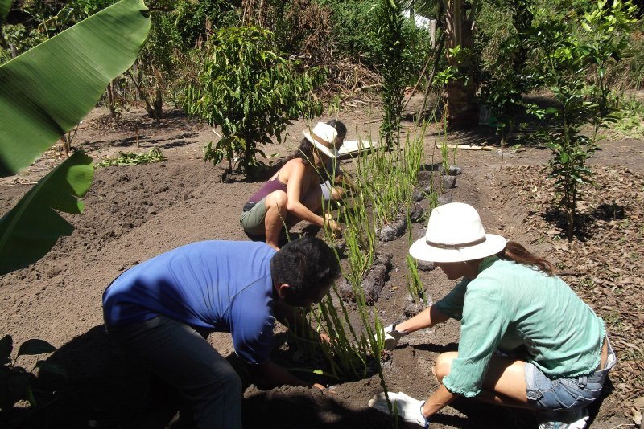

Pozimi ressurge ao fim de mais um longo inverno, trazendo ideias para futuros imaginários.

"Fique à vontade, invente o que quiser. Aqui tudo cabe!" Faça um convite assim e você vai descobrir. Pode ser pela educação, conscientizando os pequenos, distraídos em frente a telas, de que a natureza e nós somos uma coisa só. Pode ser indo ali e plantando, abraçando a terra, ajudando-a a frutificar, e repartindo os frutos com quem quer que seja, sem pensar em vendê-los, sem pensar em sugar a terra e exportar seu suco em caixinhas, quintais de código aberto.
Podem ser intervenções de outra natureza, na outra natureza. Transformações em cima dos estragos que nós mesmos criamos, objetiva ou subjetivamente. Limpar o espaço do lixo que nós mesmos colocamos lá. Parar de transformar árvores e petróleo em embalagens que, devolvidas à terra, não a alimentam. Mostrar pras pessoas que dá sim pra ser feliz com o corpo que elas tem. Criar formas de facilitar o entendimento entre seres, seja abrindo o código da linguagem imediata, seja abrindo o código da interação entre homem e máquina - que no limite é também interação entre os homens.
"Somos a revolução, o barulho que se faz em silêncio. Somos as formigarras. Trabalhamos sem dinheiro, mudamos o mundo, não temos interesses subentendidos. Isso é preocupante! " (Pra que não reste dúvida, marco aqui, com um riso, a ironia, rs.)
Somos esse tipo de gente que topa um edital poético, sem retorno financeiro, e sem promessa de aplicação no mundo real, esses doidos que passam a vida tentando equilibrar os anseios com a subsistência nesse "mundo real de indústrias rentáveis". Os desajustados, lunáticos, os meninos que "não têm jeito mesmo!"
Abra uma chamada de projetos lúdicos para um mundo imaginário e você vai descobrir que o que a gente quer, ainda, sempre, é mudar o mundo. É paz-revolução, amor, e poesia. =)"
Baixe (versões PDF [1] ou EPUB [2]) ou navegue pelos links abaixo.
Por Ana Lise
Liberdade/ Igualdade/Justiça. As três juntas inicialmente porque ainda não sabemos qual é a mais importante. Nossa assessoria já disse que vamos ter que resumir a uma delas, mas ainda não conseguimos decidir. Já recebemos inúmeros relatórios que só confundem mais do que ajudam. Estamos com um destes relatórios aqui agora que diz inclusive que igualdade e justiça são a mesma coisa. Por isso o processo inicialmente produz as três em estágios iniciais de força que serão concentradas em um único ponto ao longo dos testes e adaptações.
O que ele vai mudar?
Nossas possibilidades.
Foi pensado para que ambiente ou local?
Ambiente Intergalático, transdimensional, hipertropical e também aqueles ainda não imaginados.
Ele é feito para quem?
Para quem descobrir que precisa.
Material adicional
processo.pdf [3]
Por Tânia França
Uma proposta de plantar, replantar, não deixar nenhuma semente sem terra, apoiar o direito à vida de todos os vegetais. Plantar frutas, flores, legumes, hortaliças, capim, o que der para semear, ocupando terrenos baldios, encostas, quintais, criando hortas em aptos, casas, parques, escritórios, etc., com flores e frutos e deixar à mão de quem tem fome, sede, necessidades de sobreviver.
O que ele vai mudar?
Esse projeto vai mudar a paisagem, a relação homem natureza, a economia, o trato com as coisas públicas, a escassez de alimentos, dentre outras.
Foi pensado para que ambiente ou local?
Todo e qualquer lugar onde se tenha um punhado de terra e solidariedade no coração, amor incondicional para com tudo o que vive.
Ele é feito para quem?
Todos os seres que habitam o UNIVERSO.
Por Larissa Arruda
O Lab Macambira é um grupo de programadores reunido para suprir demandas estratégicas de desenvolvimento de software que possuem alta demanda social. A atuação tem duas frentes: 1) desenvolvimento web e 2) audiovisual. Todas as linhas de código desenvolvidas pela equipe são disponibilizadas na rede, configurando o que é chamado de desenvolvimento em código aberto, no qual toda e qualquer pessoa tem acesso ao código podendo utilizá-lo para suas atividades e adaptá-lo às demandas que precisar.
O que ele vai mudar?
O Lab. Macambira atende demandas sociais, visando transformação social, seja através do desenvolvimento de software, de cobrança e monitoramento do poder público, ou do projeto a ser desenvolvido: Escola de Programadores Populares.
Foi pensado para que ambiente ou local?
O Lab Macambira, que se localiza em São Carlos/SP, já recebeu pedidos e propostas para que se expanda para outras localidades como São Paulo/SP, Campinas/SP, Santarém/PA, Campo Grande/MS, Curitira/PR e Recife/PE. Está já confirmada e em andamento a expansão para São Paulo e Campinas.
Ele é feito para quem?
Para população em geral.
Material adicional
Por Regis Bailux

O que ele vai mudar?
A saúde física e mental das pessoas
Foi pensado para que ambiente ou local?
Foi pensado para o quintal da pajé Jassana na comunidade de Aldeia Velha Pataxó.
Ele é feito para quem?
Para todas pessoas que vivem em ecossistemas físicos e virtuais.

Por Ivan Ruela
O que ele vai mudar?
Conscientizar crianças e jovens a respeito da integração do Homem com a Natureza. Deixá-los a saber que fazem parte de um todo.
Foi pensado para que ambiente ou local?
Escolas públicas e privadas.
Ele é feito para quem?
Crianças e Jovens, até o Ensino Médio
Por Amanda Assunção Leite
Uma rede onde é incentivada a satisfação corporal, a aceitação da beleza natural.
O que ele vai mudar?
A forma como muitas pessoas se veem e se tratam.
Foi pensado para que ambiente ou local?
São Paulo e Bahia.
Ele é feito para quem?
Para todas as pessoas com baixa auto-estima, que sofram ou não com transtorno alimentares.
Por Claudia Kuen Rae Chow
Um mundo sem embalagens! Assim, comprar td a granel, suco, leite, sorvete, algodão, pão de forma, shampoo, sabonete, perfume, creme, salgadinho, biscoito, bebidas em geral. Talvez no começo seja um pouco estranho e pouco prático, mas antigamente era assim e isso vai fazer as pessoas refletirem mais antes de comprar sem pensar.
O que ele vai mudar?
Menos lixo, menos custos para criação e transporte dos produtos.
Foi pensado para que ambiente ou local?
Qualquer lugar
Ele é feito para quem?
Pra todo mundo.
Por Maira Begalli
.JPG)
O que ele vai mudar?
A NASA divulgou que hoje existem 22 mil objetos entre escombros e sucata no Espaço. Fora os objetos menores que não se consegue contabilizar. A ideia é criar uma Cooperativa de Lixo Espacial, com cooperados em todo mundo para recolher esses materias, metareciclá-los e transformá-los em satélites livres, em parceria com o MSST [5].
Foi pensado para que ambiente ou local? Para vários locais, em todo planeta. A sede idealmente seria no African Space Research Program [6], desde que eles tirem o copyright de suas vidas ;)
Ele é feito para quem?
Para todos aqueles que não têm um satélite, para bricoladores, fazedores e metarecicleiros.

Por Leandro Sena Lara
Uma proposta ambiciosa, talvez futurista, esboçada para uma evolução financeira do povo para o povo, sem nenhum intermédio. Nos tempos modernos, queremos produzir cada vez mais com cada vez menos mão de obra. Existe uma inversão de valores que substitui as habilidades manuais de cada cidadão. O sistema acoplado do neoliberalismo é o responsável por esses pensamentos com resultados alarmantes. O projeto de conscientização deve ser construído em etapas: a mais importante é a criação de um forte canal de comunicação que una a sociedade, esse canal é necessariamente composto por milhares de veículos de comunicação.
O ponto forte do processo de conscientização é que uma população não depende do governo para mudanças. A partir de cada cidadã, cidadão, a evolução social surge imperceptível e forte, sem esforços individuais ou coletivos.
O que ele vai mudar?
O projeto muda muito o campo econômico e solidifica os interesses populares sobre as perspectivas do capital. Um exemplo muito bem aplicável é: quando milhares de habitantes compram um pescado artesanal ou uma hortaliça proveniente de agricultura familiar em um pequeno mercado, é quebrado o ciclo de concentração de dinheiro das grandes redes varejistas/grandes plantações. Este é apenas um exemplo, outros exemplos são complexos para explicar em poucas palavras (o documento oficial “Século XXI – O processo de conscientização econômica brasileira” está em processo de finalização), mas todos seguem os mesmos princípios.
Foi pensado para que ambiente ou local?
O processo é pensado para todo o território nacional, mas por ser um país muitíssimo desigual é inaplicável no momento a toda população. Inicialmente a conscientização necessita acontecer nas grandes cidades com uma classe média concentrada. Exemplos: todas as capitais, Grande São Paulo, Campinas, Santos e outras cidades do Brasil.
Ele é feito para quem?
Ele é elaborado por todos para todos. No início chegará apenas à classe média e classe alta em seguida poderá ser aplicável à população pobre. Embora por diversos motivos mencionados no documento não se possa incluir a população mais carente como “colaboradora consciente” na partida, ela é a que mais rápido sentirá os efeitos positivos.
Por Mariel Zasso
O que ele vai mudar?
Vai permitir o entendimento entre falantes de idiomas distintos. Antes de uma interação com um falante de outro idioma, basta tomar um gole para passar a entendê-lo. Para um perfeito funcionamento, todos os envolvidos devem tomar. Cada um seguirá falando a sua língua, e quem tiver tomado a poção entenderá qualquer outro idioma. Funciona também para jargões técnicos. Estamos em fase de teste para a poção do entendimento entre seres de espécies distintas.
Foi pensado para que ambiente ou local?
Seu uso não é restrito a nenhum ambiente. É portátil, desenvolvemos inclusive a versão desidratada, em pó, para ser misturada em água, e facilitar a exportação.
Ele é feito para quem?
Pode ser utilizada em distintos âmbitos, desde uma confêrencia internacional, onde em vez de contratar intérpretes, ofereceríamos um gole de poção para cada participantes, quanto por turistas em viagens, antropólogos em pesquisas de campo, em negociações diplomáticas. Foi pensada principalmente para todos os interessados em conhecer gente, de toda e qualquer cultura. Precisamos de apoio para fazer testes de campo com línguas quase extintas, com as quais ainda não tivemos a oportunidade de testar a eficácia. A receita será disponibilizada com uma Licença Creative Commons - Atribuição - Uso Não Comercial - Partilha nos Mesmos Termos 3.0.
Links:
[1] http://mutgamb.org/sites/mutgamb.org/files/mutsaz/pozimi/2011/mutsaz_inverno.pdf
[2] http://mutgamb.org/sites/mutgamb.org/files/mutsaz/pozimi/2011/2011-pozimi.epub
[3] http://mutgamb.org/sites/mutgamb.org/files/webform/2011/inverno/processo.pdf
[4] http://mutgamb.org/sites/mutgamb.org/files/webform/2011/inverno/Lab.%20Macambira.pdf
[5] http://devolts.org/msst/
[6] http://ugandanway.com/